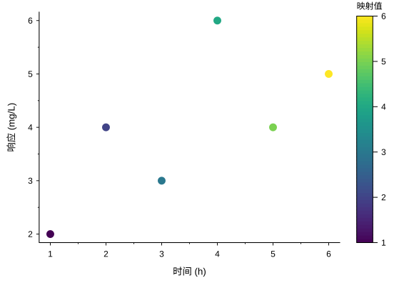
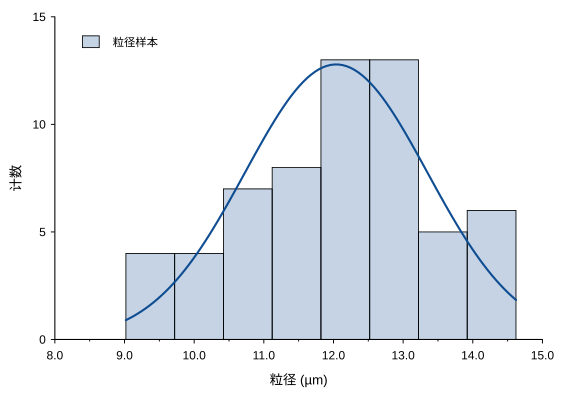
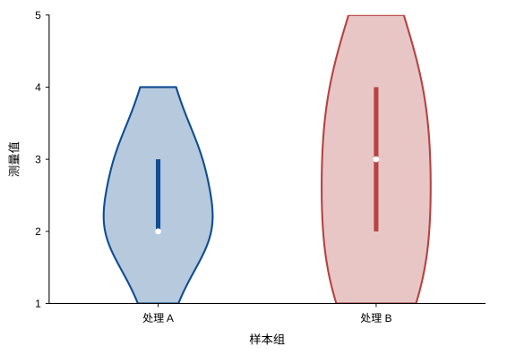
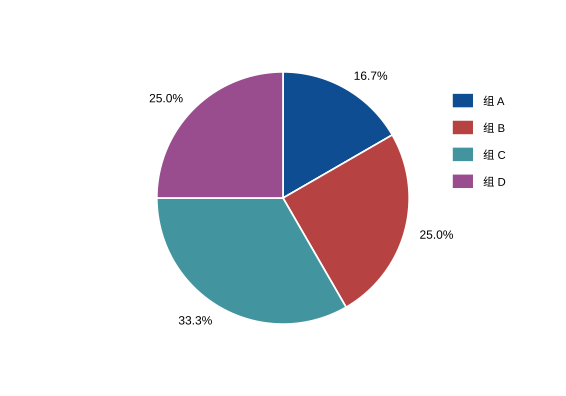

免费使用，直接开始
免费下载并使用科研绘图与数据分析功能。从导入数据到导出图形，把精力放在研究本身。
让科研绘图成为人人可用的工具。SciCanvas 免费开放源代码，以现代化界面呈现工作表、拟合分析与图形编辑。选项卡式功能区、图型预览和浅深色主题，让操作清晰直观。
开源免费 · 现代化界面 · Windows x64 · 当前为开发版

免费获取工具，公开查看代码，在清晰直观的界面中完成日常科研绘图。
免费下载并使用科研绘图与数据分析功能。从导入数据到导出图形，把精力放在研究本身。
源代码托管在 GitHub。查看实现、交流问题，也可以依照开源许可证修改代码，参与工具的持续发展。
选项卡式功能区按任务组织操作，图型预览让选择有据可循。配合独立文档窗口与浅深色主题，构建日常科研工作空间。
在熟悉的工作表中开始，用可视化操作探索数据，再把结果带到论文和报告里。
导入 CSV、文本和 Excel，设置列名、单位与数据角色。通过公式、筛选和排序，整理需要分析的数据。
进行线性、多项式和非线性拟合，查看残差与模型比较结果。配合统计、平滑、积分和寻峰，探索数据特征。
调整图层、坐标轴、颜色映射和标注。屏幕显示与导出共用场景排版，支持矢量图和高分辨率位图输出。
从分布到组间比较，从连续变化到组成比例，选择适合研究问题的图形。



以上图形由 SciCanvas 使用仓库示例数据绘制，文档版统一了字号、线条与配色。查看示例项目 ↗
数据、图形和 Note 统一保存在 .scv 项目中，方便继续编辑与整理研究过程。
打开示例或导入数据，指定 X、Y 和误差列，检查名称与单位。
选择图型，执行拟合或统计，查看曲线与分析结果。
设置坐标轴、图例和标注，使用主题统一图形样式。
保存项目，导出 SVG、PDF 或位图，用于论文与报告。
免费下载 Windows 安装包，在现代化界面中打开示例项目，开始整理数据与绘制图表。
可以。SciCanvas 开源免费，源代码公开在 GitHub，采用 MIT 或 Apache 2.0 双许可证。你可以免费下载使用，也可以依照许可证查看、修改和分发代码。
SciCanvas 采用选项卡式功能区，按工作任务组织命令。图型预览帮助选择图形，独立文档窗口方便切换数据与图表，浅色和深色主题适应不同使用习惯。
日常使用直接运行 SciCanvas。程序独立完成数据分析与绘图，无需安装 Python，也无需连接云服务。
当前开发、验收和发布平台为 Windows x64。后续平台适配进度可在仓库的功能清单中查看。
项目代码采用 MIT 或 Apache 2.0 双许可证。第三方依赖及素材的许可说明见仓库中的 THIRD_PARTY_NOTICES.md。
使用中遇到问题，请发邮件至 sch4011997@gmail.com，并附上版本、问题描述和复现步骤。也可以在 GitHub Issues 交流。开发环境与贡献流程见 贡献说明。